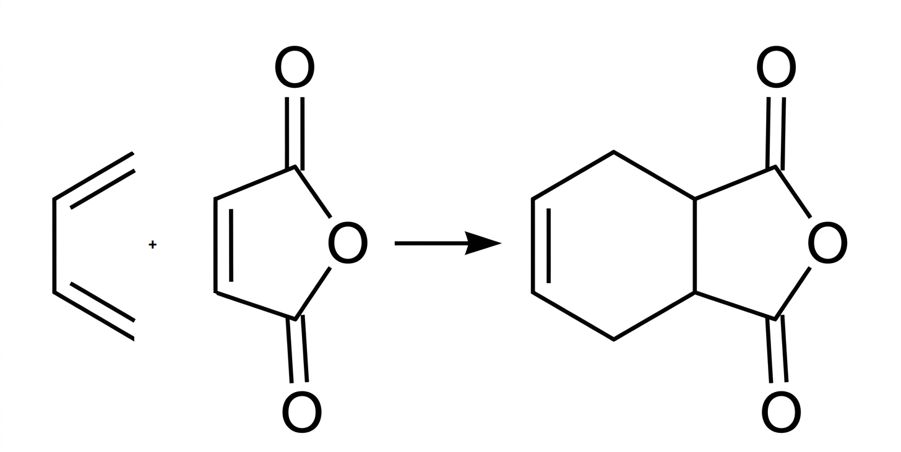
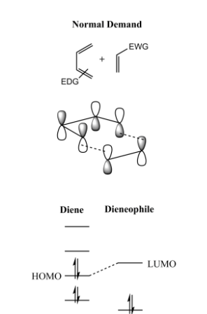
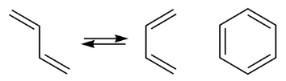

Diels–Alder Reaction
Definition
In organic chemistry, the Diels-Alder reaction is a chemical reaction between a conjugated diene and a substituted alkene,
commonly termed the dienophile, to form a substituted cyclohexene derivative. It is the prototypical pericyclic reaction with a concerted mechanism;
specifically, it is a thermally-allowed [4 + 2] cycloaddition with Woodward-Hoffmann symbol [π⁴s + π²s]
General Reaction
Example
This reaction, of which the classical example is between butadiene and maleic anhydride ,
involves the 1,4-addition of an alkene to a conjugated diene. The reaction is usually easy and rapid, of very broad scope,
and involves the formation of carbon-carbon bonds, hence its synthetic utility.

Mechanism
The reaction is an example of a concerted pericyclic reaction. It is believed to occur via a single, cyclic transition state, with no intermediates generated during the course of the reaction.
As such, the Diels-Alder reaction is governed by orbital symmetry considerations.
For the more common "normal" electron demand Diels-Alder reaction, the more important of the two HOMO/LUMO interactions is that between the electron-rich diene's ψ₂
as the highest occupied molecular orbital (HOMO) with the electron-deficient dienophile's ㅠ* as the lowest unoccupied molecular orbital (LUMO).

Key Features
- Pericyclic reaction
- Concerted mechanism
- No catalyst required (but can be accelerated by heat or Lewis acids)
- Forms cyclic compounds
- Stereospecific reaction
- The diene must react in the cisoid(1) , rather than the transoid conformation(2).Cyclic dienes(3) which are locked in the cisoid conformation
are found to react very much faster than acyclic dienes in which the required conformation has to be attained by rotation about the single bond (the transoid conformation is normally the more stable of the two).
Thus cyclopentadiene is sufficiently reactive to add to itself to form a tricyclic dimer, whose formation-like most Diels-Alder reactions-
is reversible.

Quick Quiz
Applications
- Synthesis of cyclic compounds
- Used in pharmaceuticals
- Preparation of natural products
- Polymer chemistry